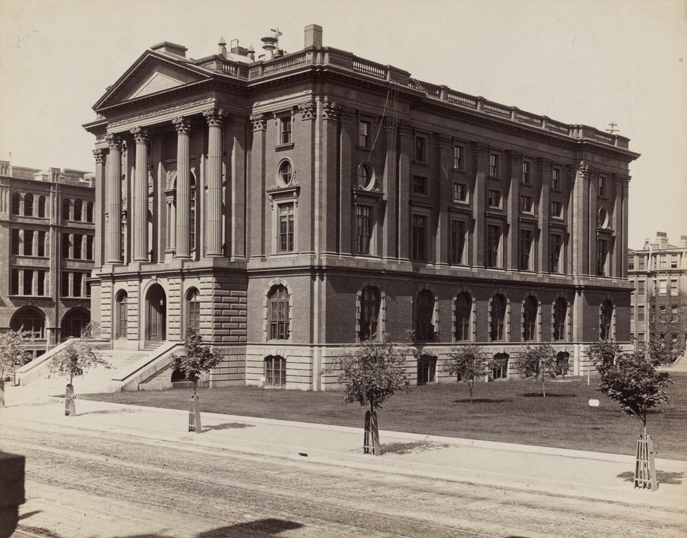
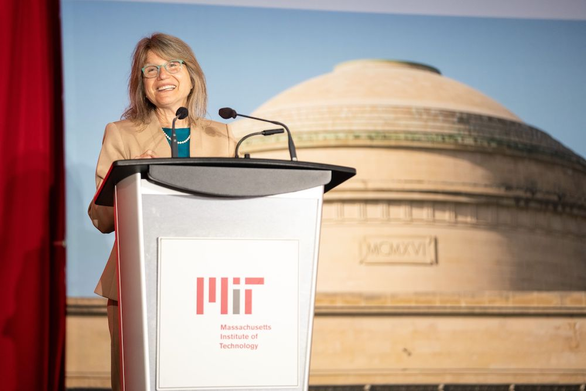

The MIT community is driven by a shared purpose: to make a better world through education, research, and innovation. We are fun and quirky, elite but not elitist, inventive and artistic, obsessed with numbers, and welcoming to talented people regardless of where they come from.

Founded to accelerate the nation’s industrial revolution, MIT is profoundly American. With ingenuity and drive, our graduates have invented fundamental technologies, launched new industries, and created millions of American jobs. At the same time, and without the slightest sense of contradiction, MIT is profoundly global. Our community gains tremendous strength as a magnet for talent from around the world. Through teaching, research, and innovation, MIT’s exceptional community pursues its mission of service to the nation and the world.
Key facts

History
Incorporated________________________________________1861
Motto_____________________“Mens et manus” (“mind and hand”)
Campus
Location_______________________________Cambridge, MA USA
Size__________________________________168f acres(0.68 km2)
Student residences_____________________________________19
Playing fields____________________________26 acres(0.11 km2)
Garden + greenf space_________________________________40+
Public spacef works of arts______________________________60+
Addmissions(Class of 2026)
Applicants________________________________________33,767
Admits____________________________________________1,337
Selected Honors
Nobel laureates______________________________________100
National Medal of Science winners________________________60
National Medal of Technology and Innovation winners_________30
MacArthur Fellows_____________________________________81
A. M. Turing Award winners______________________________16
More
MIT Facts
to Cambridge in 1916
Community
Employees(Including faculty)___________________________________________16,327
Professors(all ranks)_____________________________________________1,080
Other teaching staff_______________________________________________1,007
Undergraduate student-to-faculty and instructional staff ratio students_____________________________________________3.1
Students__________________________________________11,858
Undergraduates_____________________________________4,657
Women_______________________________________2,244(48%)
US Minority groups______________________________2,640(57%)
Graduates students__________________________________7,201
Women_______________________________________2,830(39%)
US Minority groups______________________________1,610(22%)
the District of Columbia, four territories, and 135 foreign countries.
Faculty

For MIT’s faculty — just over 1,000 in number — cutting-edge research and education are inseparable. Each feeds the other. When they’re not busy pioneering the frontiers of their fields, MIT faculty members play a vital role in shaping the Institute’s vibrant campus community — as advisors, coaches, heads of houses, mentors, committee members, and much more.
engage in research.
Leadership

President Sally Kornbluth MIT’s 18th president, January 2023 – present The Institute’s board of trustees, known as “the Corporation,” includes 74 distinguished leaders in engineering, science, industry, education, and other professions.
Cambridge & Boston